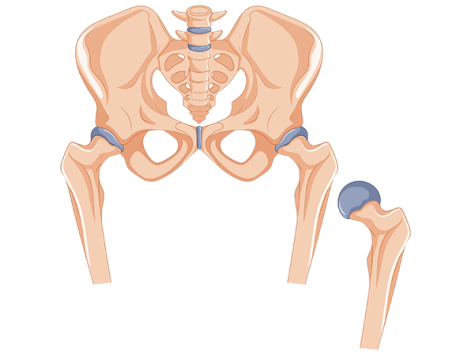

fit and alignment of the tibial implant.
Trial Reduction
Templates where temporary implants are used to assess fit and alignment.
Trial Spacer
Temporary spacer used to test joint space and alignment.
Unicompartmental Knee Replacement
Replacement of only one compartment of the knee joint.
Varus/Valgus Alignment
Alignment of the knee joint in relation to inward (varus) or outward (valgus) angles.
Wound
Closure
Process of closing and suturing the surgical incision.
Acetabular Cup
Component of a hip implant that replaces the acetabulum (hip socket).
Acetabular Cup Impactor
Instrument used to place the acetabular cup into position.
Acetabular Cup Positioner
Device used to position the acetabular cup accurately during surgery.
Acetabular Liner
Plastic or ceramic insert placed inside the acetabular cup to provide a smooth surface.
Acetabular Reamer
Tool used to shape the acetabulum for implant placement.
Acetabulum
The cup-shaped socket in the pelvis that articulates the femoral head.
Alignment Jig
Device used to ensure correct
alignment of implants during surgery.
Anterior Approach
Surgical approach to the hip from the front of the body.
Arthroplasty
Surgical procedure to replace or repair a damaged hip joint.
Aseptic Loosening
Implant loosening due to lack of infection but due to mechanical factors.

Biomechanics
The study of the mechanical aspects of living organisms.